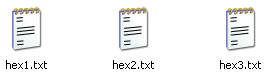
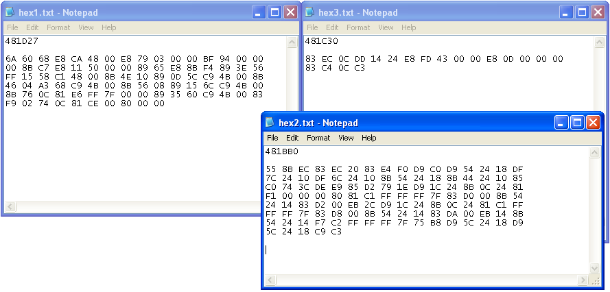
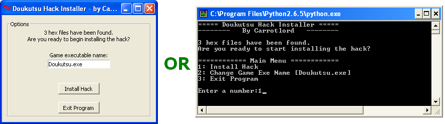

Using Autohacker2_GUI.pyw or Autohacker2_console.py, you can install any type of pre-made assembly hack onto an unmodified Cavestory exe, no matter how complex the hack is.
Autohacker2_GUI.pyw uses a graphics interface (i.e. you click buttons and stuff happens), while Autohacker2_console.py uses a command line (i.e. you type into a command prompt and stuff happens).
You will need to get the hex codes, or the hexadecimal equivalent of your ASM code. The best way to do this is from OllyDbg, using "binary copy" to copy a block of ASM code, which will auto-convert it into hexadecimal pairs.
After that, for every offset, you will need to make a text file and put it into the hexdata folder. The name for each text file must be in the format hex(number).txt.
For example, if your hack has 3 parts, your files would be named hex1.txt, hex2.txt, and hex3.txt. You can theoretically have an infinite number of these text files.
At the very beginning of each text file, type in the offset at which the hex codes begin. It's important that you do not put any spaces, tabs, newlines, or any other characters before the offset.
Also, the offset must be written OllyDbg-style, which means it must have exactly 6 digits, and it must start with the number 4 (example: 40612A).
After that, just do a binary paste of the hex codes taken from OllyDbg. It doesn't matter how many spaces or newlines you have between each hex pair, as long as they are in order. It also doesn't matter whether the hex letters are capitalized or not.

(This is an example of what your hexdata folder might look like.)


Then put the Cave Story exe into the same folder as the programs. Run one of the programs to apply the hack.
Note that you can change the target exe's name if the name of your mod isn't Doukutsu.exe.
|